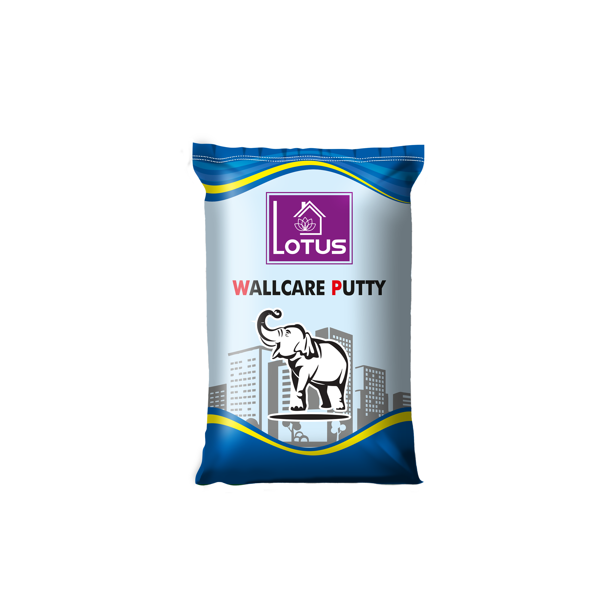

Wall Care Putty

| Technicaldata Specifications | : |
|---|---|
| Consistency | 32% |
| Wet Density | 1675 kg/m3 |
| Setting Time | 24.0 Hrs |
| Residue on 150 um sieve | 0.127% |
| Compressive Strength | Water 2-3 times a day for 7 days |
| Bulk Density | Approx 1,8 kg/ltr |
| Compressive Strength (7 days) | 1.49 N/mm2 |
| Compressive Strength (28 days) | 2.00 N/mm2 |
| Pull Of Adhesion(7 days) | 0.64 N/mm2 |
| Pull Of Adhesion(7 days) | 0.66 N/mm2 |
LOTUS wall care putty is a white cement based putty used to give that extra shine to the walls. Among the many good qualities of this wall care putty it can easily and strongly bond to the base even in wet or damp conditions. While doing the job it also forms a protective coat on it to avoid any scratches or other damages. It is a good sealing on interior and exterior walls. It also can be used concrete,plastered,pre-caste and AAC block walls.With a proper preparation it can be used on flasky surfaces as well.
Usage Instructions :
- Prepare the surface by cleaning all dirt/ dust and dampen the surface before applying putty.
- Mix the 40 kg bag powder with 35-45% of water with an electrical stirrer for 10-15 minutes until the mix is uniform.
- Leave the mix for 5 to 10 minutes and remix before use.
- Use the material within 2-3 hours of mixing.
- Allow 3 hours between first and second coat.
- Water curing is not mandatory. However cure 2 to 3 times a day for 3 days to get better results.
- Allow it do dry completely for 3 days at least.
- Paint can be done after 3 or more days of application of putty.